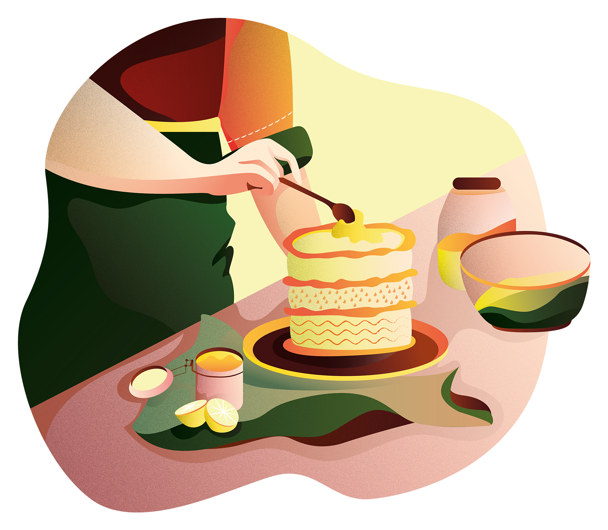
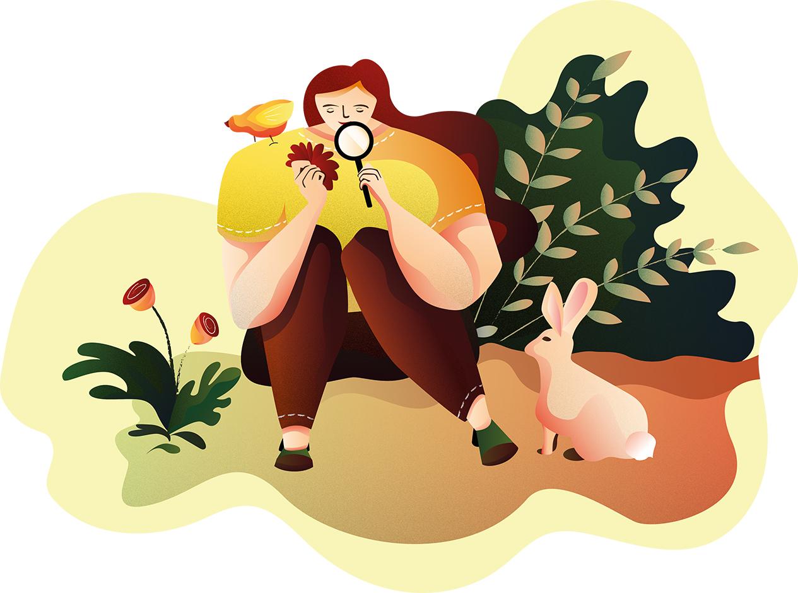
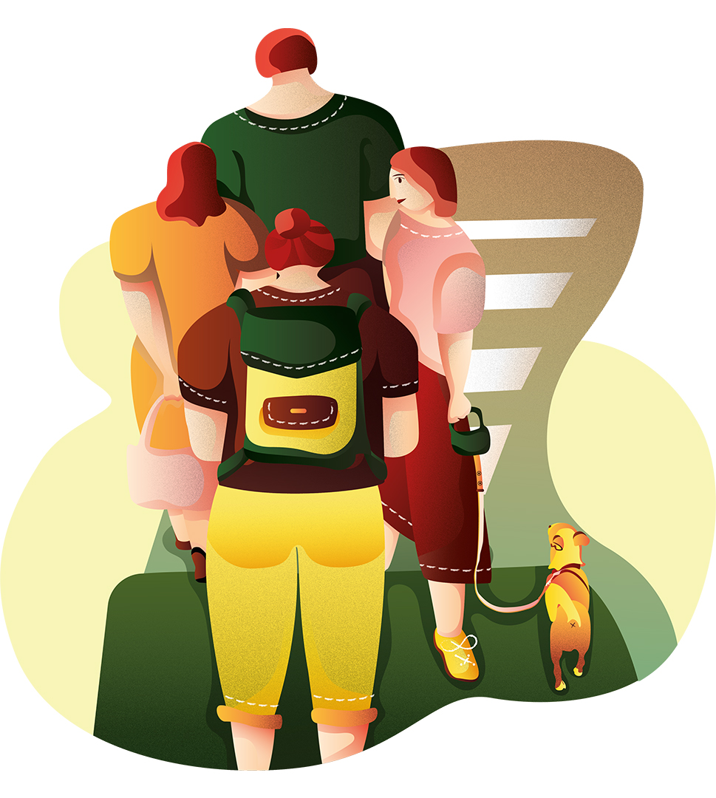
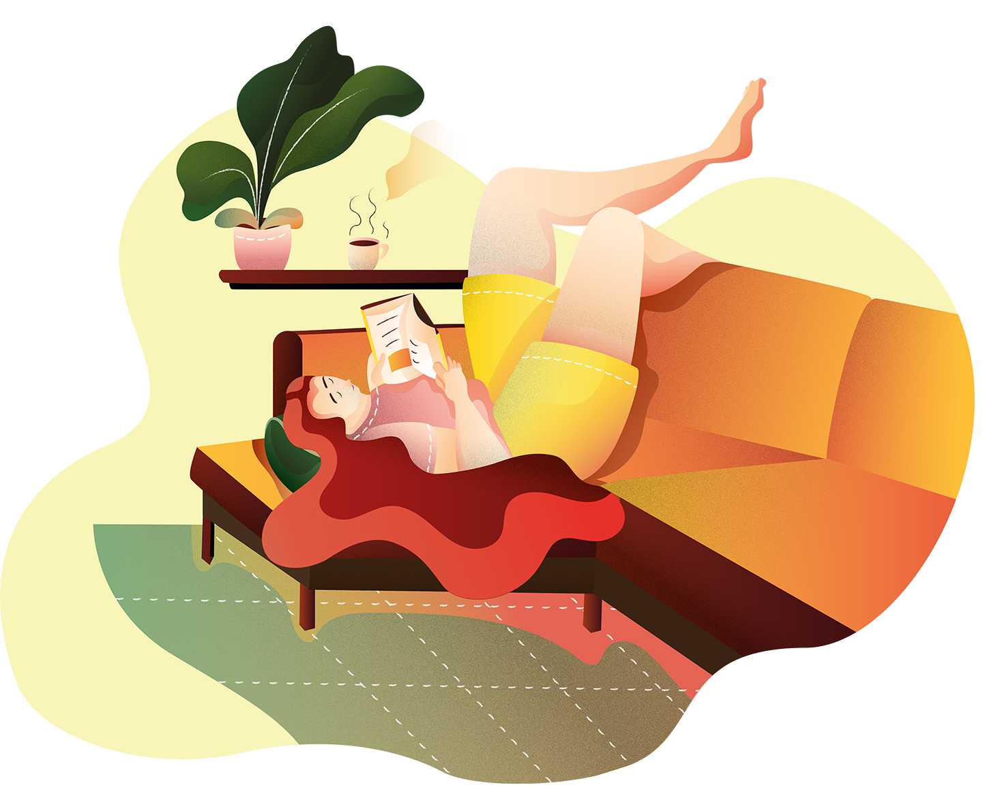

Lesson 1: Baking and Friendship
Baking had been pretty much unfamiliar to me when I was back home, simply because it did not belong to our family tradition. Mom never baked. People, including we- teenagers, usually bought cakes and pastry products at local supermarkets, Western bakeries, and modern-styled coffee shops. And to be honest, I would prefer savoury dishes over sweet things.
During the first year living in Seinäjöki (a small city situated in South Ostrobothnia, Finland), I shared the room with another girl-Thai. She was a baking lover and always excited whenever discovering a new recipe. Thai invited me to try her very first-time Japanese green tea cheesecake. The taste blew me away since it was not too sweet as I had expected; the sweetness mixed with the bitterness of the tea powder. Things were comfortably balanced inside those little creamy green pieces.

We got along well after merely a month. As I started falling in love with Thai’s cakes, she was happy to let me become her kitchen buddy. We spent almost leisure time baking together and collected many cool recipes from the Internet.
Traditionally, having a cup of cappuccino and a piece of cake at a cozily decorated cafe after school has been a custom amongst friends. We share lots of stories over the coffee table but barely talk about cakes. Until when I began making cakes in Finland, we paid more attention to them and easily recognise different types. Chats were fun as usual, but they would often occur in the kitchen while we were mixing powder, melting chocolate, or knitting dough together.
After every time when our cakes were done, we would share with our neighbours as a small gift.
Lesson 2: A Deeper Connection with Mother Nature
Coming from a coastal city, my childhood is filled with lots of lovely memories of the sea and mountains. It would be hard to imagine living without nature. For me driving along the coastline with my gangs and climbing up to the top of the Nui Lon mountain where giant US radars have been standing still for over half of century with dad helped calm me down, which would shoo the fear of uncertain future away. We cherished every moment of being in nature together, but rarely gave a thought of how to protect it. Perhaps it is because we were too young to ponder about it. Or I just took the nature for granted, thinking that someone had been paid to keep it green enough.
Yes, it might be someone powerful, not a tiny high-school student like me. I realised my ignorance only after a few years of living in Finland.

Even though the Finns seem distant, you can still feel their a deep concern about nature in many aspects of life, for instance, the formation of surnames based on natural elements such as hill (mäki), river (jöki), lake (järvi), stone (kivi), the habit of carrying reusable bags for shopping, the frequent use of public transportation or bicycles, treating a pet equally as a human member of the family, owning a summer cottage in the middle of a forest (mökki) for family gatherings, having profound knowledge of mushrooms, berries, and wild animals, or jogging through the woods located right in the hear of the city. The list goes on. One of the most renowned Finnish clothing and interior brands- Marimekko- mostly takes flowers, trees, and animals as their iconic designing themes.
Mother nature is no longer a backdrop behind my daily-life activities. Now I am eager to get to know her, and she becomes a philosophical topic whenever I think about my own living quality and happiness.
Lesson 3: A New Perspective towards Vietnam
When chatting with some Finnish friends about their homeland, I gain the impression that their love for the motherland is simple and interestingly personal. People usually open up their daily-life stories besides Moomin, Marimekko, the Santa Claus from Lapland. Even shy ones may share moments of enjoying the blueberry pie made by grandma, fishing time with dad and brothers, getting drunk with high-school friends for the first time, or jumping into freezing lake after sauna. Hearing this I cannot help wondering about things that belong to my homeland makes me truly adore. I guess they may not be Pho or Ao Dai but something specific and close to my life instead.
Another thing that urges me to learn more about my original country is the so-called Vietnam War. It has been a popular topic on TV-programs ever since I was a kid. My grandparents celebrate the war victory because they were parts of it, and of course, the entire story is told by the winner side back home.
Again, I thought that I knew the war so well until a friend introduced one of his favourite history documentaries call The Vietnam War by Ken Burns and Lynn Novik on Netflix. Its ten episodes are eye-opening and yet confuse me for a while.
It turns out that a story will show another colour through the other’s eyes.
Lesson 4: Being Open to Whatever May Come
I used to be a control freak who tends to plan every step of life and only makes a move when things are assured to be in my safe zone. Unfortunately, my planning has always failed since the first year of living independently from parents. I was constantly stressed out, and the darkness of winters only worsened the problem. The unstable state of mind lasted almost five years even after I met three of my biggest helpers: my current partner, Thai (the five-year flatmate), and ex-boss. These guys, in one way or another, all taught me how to stay relaxed and open to anything that comes to my life.
Don’t get me wrong, staying open-minded is not equal to having no plan. Even when you choose to go with the flow, there should be proper preparation, and the first step is to question things that bring you joy.
My ex-boss who has been taking Finland as her home for over 17 years once gave me career advice based on her experience when we were still working together. “There is no reason to be sad. I am happy. Trust me, everything is gonna be ok!”- she once said to me. I was skeptical about her words at that time, but somehow they still floated around in my mind, just like a big unsolved question mark. Until recently, after having decided to quit the job and push myself to participate in new courses, I eventually realize the value of her saying.

Next step, enjoy every living moment. My flatmate is the master of this. I have a privilege to be with her in many phases of her college time. Rest assured that lots of unexpected incidents have bumped into her way, both good and bad ones. She used to be a bit freaked out at the beginning but then quickly bounced back with a solution which is to accept and swing with it. That is why she had such a memorable exchange period in Berlin, an exciting six-month internship in Tokyo, and a decent job in Helsinki when settling down there.
The last step to be open comes from my partner. His secret is to compromise. By reaching a win-win agreement, your resilience to unwanted challenges will be strengthened.
This guy has no sugar-coated mouth. He will give straightforward opinions like “I think you are being against the current” whenever I whine about things that do not happen as the way I want them to be, and this is opposite to my expectation. However, I have to admit, that the approach he shows me to handle problems is quite effective. This makes me reflect on how I dealt with unpleasantness. There is a better solution, which is to stop complaining, accept the fact the things have derailed then figure out a new way to settle.
Lesson 5: Problem-based Reading
Spending four years studying at a Finnish AMK (aka the university of applied sciences in English), I eventually understand that to read a written piece effectively, one should identify a clear target beforehand. That can be what you will get from the material, in the form of a specific question, a keyword that addresses one aspect of a problem, or the name of a topic that awakes your curiosity.

At school, students are trained to build up a problem-solving mindset via self-reading. Teachers (much closer to instructors) give our teams a problem so that we can figure out the solution by rummaging into recommended sources at the library. The results are delivered based on what we have researched and discussed together.
Homework and preparation for exams are not too heavy. We are usually required to read some chapters of the course books, which is enough to pass. This way only touches the surface of a particular issue, leaving a huge amount of spare time for students to dive into other written materials for a deeper understanding. We have the freedom to choose to read further if we find it personally necessary.